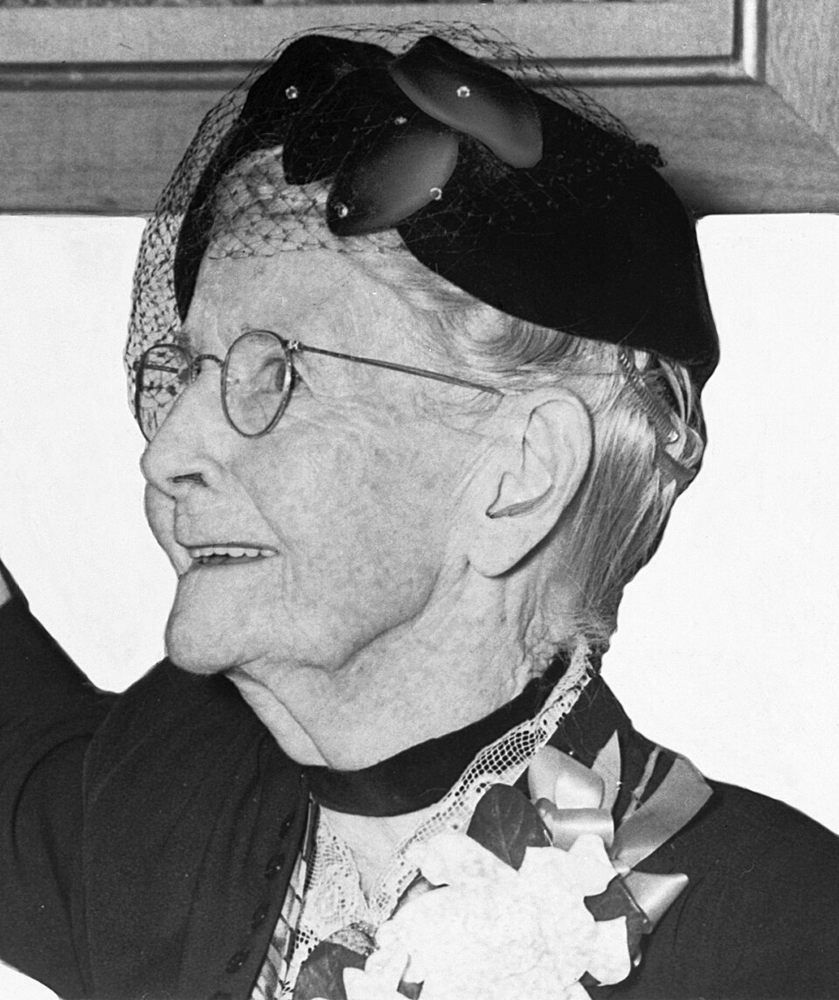
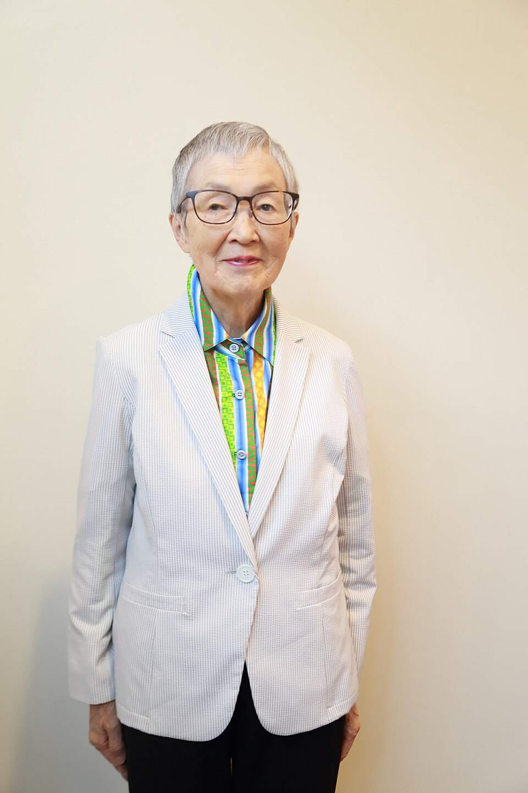
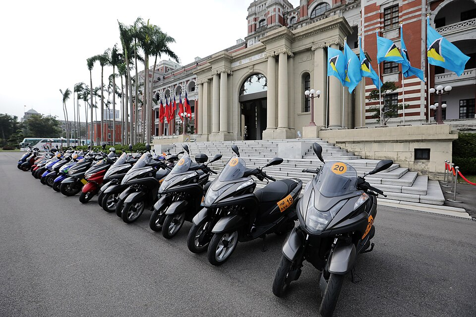

從夢想清單到精彩人生的啟航站
退休不是終點，
而是另一場華麗冒險的起點！
可以舉很多次手。講師點一下，看看大家的方向。
「還沒想到」也很好，今天就是來想的
傑克·尼克遜、摩根·費里曼主演。
清單不是等到最後才寫，
今天就可以開始。
導演羅伯·雷納；2007 年 12 月美國首映，台灣 2008 年 2 月上映。末兩行為本簡報的歸納。
如果是您，清單第一項會寫什麼？
他們做了哪些事？記下一項
哪一項，您也想試試看？
觸電網 - 經典頻道〈一路玩到掛〉電影預告
一直想去，還沒去成的
年輕時沒機會學的
好久不見、放在心上的
做完會很有成就感的
先不管錢、時間、別人怎麼想
大的小的都算，寫滿十個
圈出最想先做的三個
寫完跟隔壁同學交換看，說說為什麼選這三個
她大約幾歲，才開始認真畫畫？

開始作畫的年齡各資料略有出入（約 76–78 歲）。首次個展為 1940 年 10 月，紐約。照片：New York World-Telegram & Sun（公有領域）。
猜猜她畫的是什麼？
她的畫，讓您想到哪裡？
有什麼事，我一直覺得「太晚了」？
藝術開開門〈素人藝術家摩西奶奶 人生沒有太晚的開始〉
2017 年，81 歲的她做了一件什麼事？

遊戲名稱 hinadan（女兒節人偶擺放），2017 年 2 月上架。資料：日本政府公關刊物 2018。照片：Araisyohei，CC BY 4.0。
您現在用手機，最常做什麼？
她為什麼想自己做遊戲？
我想學的 3C 新東西是什麼？
BBC News 中文〈82歲 她可能是世界上最年長的APP人才〉
這群「不老騎士」，平均年齡幾歲？

照片為 2017 年再度環島的不老騎士團，機車隊停在總統府前；總統府，CC BY 2.0。
81 歲環島，您覺得最難的是什麼？
哪一位阿公阿嬤，讓您印象最深？
如果找同學一起，我們想去哪？
Gograndriders〈【不老騎士-歐兜邁環台日記】正式預告〉
三個故事裡，哪一個最打動您？
他們跨出的第一步，各是什麼？
「太晚了」這句話，還成立嗎？
每組推一位，用一句話跟全班報告
等一下回來，把夢想變成做得到的計畫
拍過約百部電影的大明星。
本來最拿手的事停下來，
才有空位放新的事。
末兩行為本簡報的歸納，非林青霞原話。照片：HKIFFMarketing，CC BY-SA 4.0（Wikimedia Commons）。
您看過她的哪一部電影？
她怎麼說「寫作」這件事？
我也有想寫下來的故事嗎？
中時新聞網〈林青霞返台談新書 窗裡窗外說人生〉
開了一輩子洗衣店的阿公阿嬤。
不必離開原來的生活，
加一點新玩法就好。
資料：自由時報、中央社報導。秀娥阿嬤已於 2023 年 5 月辭世。末兩行為本簡報的歸納。
家裡有沒有壓箱底的舊衣服？
阿公阿嬤拍照時的表情
我原本的生活，可以加什麼新玩法？
BBC News 中文〈萬秀洗衣店爆紅背後的故事〉
先不設限，
把想做的都列出來
時間、體力、金錢、
同伴，手上有哪些？
卡住的地方在哪？
可以怎麼繞過去？
定下這個月
就能做的第一步
拿剛剛圈的第一個夢想來看。有的請舉手，講師點一下。
沒亮的那幾格，就是接下來要想辦法的地方
同學提的辦法，常常比牌子上寫的更實用
研究發現，讓人到老都快樂又健康的關鍵是什麼？
Harvard Study of Adult Development；現任主持人 Robert Waldinger，2015 年 TED 演講。724 人為哈佛學生與波士頓市區少年兩群合計。
目的感最低的一組，死亡風險約是最高那一組的 2.4 倍。
Alimujiang et al. (2019). JAMA Network Open, 2(5), e194270.
「生きがい」是日文，意思是「活著的意義、每天的盼頭」。風險約高出五成。
Sone et al. (2008). Psychosomatic Medicine, 70(6), 709–715.
兩篇都是觀察性研究：看得到「有關聯」，不能證明是目的感讓人長壽。
研究者說，影響力可以和抽菸這類公認的危險因子相比。
Holt-Lunstad, Smith & Layton (2010). PLoS Medicine, 7(7), e1000316.
退休前有參加兩個團體的人：兩個都留著，6 年內死亡約 2%；少一個約 5%；兩個都沒了約 12%。
Steffens et al. (2016). BMJ Open, 6, e010164.
壓力和生氣，隨年紀一路減少；憂慮在中年之後也下降。
Stone et al. (2010). PNAS, 107(22), 9985–9990.
朋友不必多。關係的「品質」，比「數量」更重要。
Hsu & Chang (2015). Aging & Mental Health, 19(12), 1131–1137.
美國那篇是同一時間問不同年紀的人，不代表每個人都會越老越快樂。
品質比數量重要；
家人、老友、鄰居都算
大事小事都可以：
顧孫、種菜、當志工
退休了，社團、班級、
據點不要一起退
等一下的問卷，分數低的那題，可以對照這三件事想一想
1 非常不同意 · 2 不同意 · 3 有點不同意 · 4 普通 · 5 有點同意 · 6 同意 · 7 非常同意
分數低的那一題，就是夢想清單的線索。
Diener, Emmons, Larsen & Griffin (1985). J Pers Assess, 49, 71–75；分數解讀依 Diener (2006)。中文為本簡報自行翻譯，非正式中文版。
教育部。55 歲以上，全台各鄉鎮市區都有課可以上。
到大學校園裡上課，跟年輕學生當同學。
勞動部。55 歲以上想再工作、兼職，可以找它媒合。
衛福部。上網查住家附近的志工機會，有高齡志工專區。
共餐、健康促進、才藝課，也很歡迎長輩當幹部和志工。
自己或家人需要照顧服務時，打這支電話詢問。
資訊查核於 2026 年 11 月。請換上本地的樂齡中心、據點名稱與電話。
要小：一個禮拜內做得到
要具體：哪一天、做什麼
要說出來：找一位同學作證
「禮拜三打電話問樂齡中心的課表」
把夢想清單貼在看得到的地方
做完今天說的那個第一步
找一張自己年輕時的照片帶來
照片是下一堂「時光機」要用的